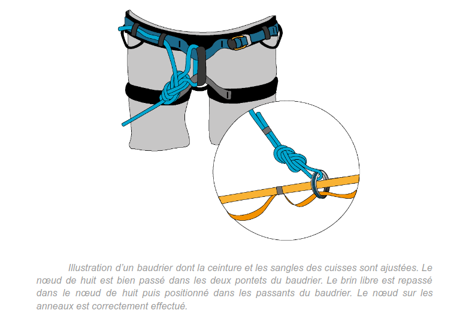
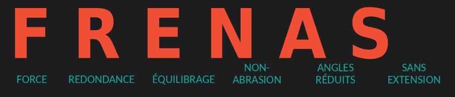
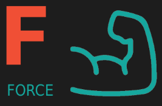
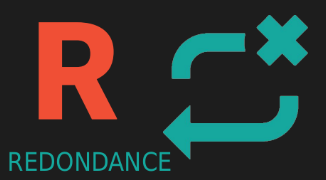
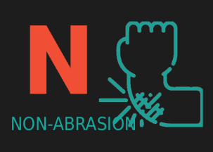
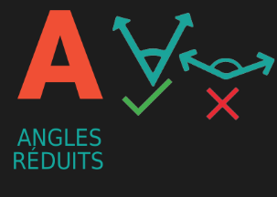
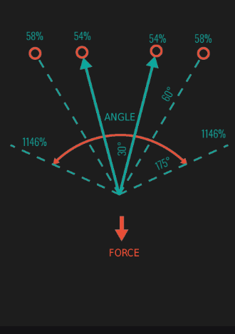

Principes, fondamentaux et sécurité
Rigging de Highline
Fondements et principes théoriques / pratiques
Nous exposerons sur cette page des fondamentaux theoriques et pratiques sur l'installation de highline , Traduction française librement inspirée de la conférence originale en espagnol par Rosendo Casarrubias, ainsi que du cahier technique highline FFCAM faire défiler la page ou utiliser les liens du sommaire pour aller directement à une section du cahier ffcam
Conférence originale complète en espagnol 2024
Rigger et instructeur de rigging ISA
A CONSULTER : Diapos traduites par IA : Rigging de Highline FR(IA)
Notes synthétiques de l'oral de la conférence en francais (IA peut contenir des erreurs)
Instagram : @r.o.cas Si te gustaría ver más contenido de este tipo considera donarme: PayPal: @rosendisho / ro.cas.highline@gmail.com Patreon: patreon.com/SlacklineMX Youtube : SlacklineMX
Racourcis vers les chapitres du Cahier Technique Highline FFCAM :
Chapitre 1 : Recommandations pour l’encadrement de la pratique de la highline
Avis de non-responsabilité
Le contenu présenté ici NE constitue PAS un guide complet pour réaliser un rigging de highline en conditions réelles, mais un guide d’orientation pour comprendre les aspects théoriques de sécurité qui encadrent cette pratique.
Il n’est recommandé à aucun débutant, ni à aucun groupe de débutants, de se lancer seul dans cette activité sans avoir au préalable bénéficié des conseils de personnes expérimentées, ainsi que d’une pratique et d’une expérience préalables, avant de se risquer à faire un rigging par ses propres moyens.
Les personnes intéressées sont également invitées à continuer de se former par leurs propres moyens et à construire une base de connaissances et de jugement plus solide avant de considérer qu’elles ont les compétences nécessaires pour le réaliser.
Gardez toujours en tête l’effet “Dunning-Kruger”, aussi appelé effet de surconfiance, qui est un mécanisme cognitif par lequel les personnes les moins qualifiées d’un groupe tendent à surestimer leur compétence dans un domaine.
Il est attribué à une difficulté métacognitive des personnes non qualifiées qui les empêche de reconnaître exactement leur niveau de compétence/incompétence et d’évaluer leurs réelles capacités.

De nombreux aspects et détails techniques ne seront pas abordés ici et sont pourtant cruciaux pour réaliser une installation correcte. Rien ne remplace l’entrainement et la formation continue auprès de personnes expérimentés.
Notamment nous ne parlerons pas des conséquences du vent, du traffic dans l’espace aérien et de ses conditions d’ocupations, des reglementations locales pouvant s’appliquer en défense de l’environnement,des installations sur bungees,de l’installation des points d’ancrages des sangles longues,et certains détails seront omis, on essayera de mettre en lien au maximum de ressources externes pertinentes sur les sujets non traités
Gardez en tête que les technique et les pratiques évoluent , ce qui est acceptable aujourd’hui pourrait ne plus l’être demain si le matériel ou nos standards changent.
Remember! When rigging a highline, always account for the possibility of a mainline failure. Have a plan for how to rescue an injured or unconscious highliner and keep all necessary rescue equipment on hand.

Accidentologie
Les seules données disponibles sur l’accidentologie en highline sont recueillies par l’ISA, International association of slackline, qui propose sur son site internet un formulaire de retour d’accident.
Ont ainsi été recensés en 2021, 50 rapports relatifs à des accidents ou incidents ayant eu lieu dans le cadre de la pratique de la highline. Deux tiers des rapports concernent des blessures survenues à cause d’un choc avec le leash ou la sangle de highline. Des oublis d’encordement au leash sont à déplorer, de même que des dommages causés par les effets du vent. Les lésions occasionnées sont majoritairement des fractures des doigts et des orteils, des luxations et des brûlures ou des bleus. D’autres rapports ont été recueillis depuis, mais n’ont pas encore été publiés.
Ces informations sont pertinentes mais présentent un biais non négligeable. En effet, l’analyse se fonde sur les données recueillies : les accidents n’ayant pas fait l’objet de déclarations ne peuvent donc pas être pris en compte. Il peut être supposé que seuls les accidents les plus graves ont été déclarés, et que les blessures bénignes « courantes » n’ont pas été recensées.
Rappel : La plupart des accidents ne sont pas issus de la pratique de la highline en elle-même mais des activités « annexes » : l’accès, l’installation, le temps passé autour des lignes, etc. Par conséquent, la vigilance ne doit pas porter uniquement sur les temps d’évolution sur la highline mais aussi sur tous les moments passés dans le cadre de cette pratique.
Qu’est-ce que le rigging de Highline ?
La HIGHLINE est l’activité qui consiste à pratiquer la slackline en hauteur.
La highline peut aussi être comprise comme un système installé entre deux structures (ou plus), utilisé pour s’équilibrer, jouer ou se déplacer.

Le RIGGING DE HIGHLINE ( ou gréement en français dans le texte) est le processus par lequel on installe une sangle (« slackline ») en hauteur.
Comme il s’agit d’une activité à haut risque, la highline a une longue histoire d’évolution, au cours de laquelle on a cherché à augmenter, affiner et rendre plus efficace la sécurité du système, afin de pouvoir pratiquer l’activité en toute sécurité même dans les scénarios où l’équipement ou une partie du système viendrait à faillir.
Savoir faire du rigging de highline implique donc de pouvoir réaliser une installation sûre, avec une compréhension approfondie de tous les éléments qu’une ligne doit réunir pour être sûre, ainsi que des critères qui permettent d’évaluer une installation afin de déterminer si elle est sûre ou non.
Highline – Les 10 points les plus importants
Les 10 points importants en Highline par swiss-slackline
Les 10 points suivants ont été rédigés dans le but de limiter les blessures et les accidents causés par des erreurs pendant le montage ainsi que durant la traversée d’une highline.
Ensemble des publications de l’ISA sur la highline
Maximes du bon rigger
Connaître la théorie ne garantit pas d’être un bon rigger, mais tout bon rigger connaît la théorie.
Un bon rigger est celui qui fait passer sa propre sécurité et celle de son équipe avant la réalisation d’une installation
Dans cette même logique, un bon rigger n’est pas seulement celui qui sait réaliser une installation sûre, mais aussi celui qui reste en sécurité pendant qu’il la réalise.
Un bon rigger est celui qui sait reconnaître quand les conditions (météo, disponibilité du matériel, état des points d’ancrage, expérience des personnes impliquées, état physique et mental) ne sont pas adaptées pour poursuivre le rigging, et qui est capable de le signaler et d’arrêter avant qu’un incident ne se produise.
FRENAS

Pour toujours garder à l’esprit les concepts de base à évaluer, il existe l’acronyme FRENAS,
Désormais, chaque fois que tu abordes une installation de highline, avant de l’utiliser, dis-toi « FRENAS ! » et vérifie les points suivants.
F pour FORCE
R pour Redondance
E pour Egalisation
N pour Non - Abrasif
A pour Angles réduits
S pour Sans Extension
Avant de poursuivre avec une description de chaque concept, il est important de mentionner que cet acronyme est un effort pour l’adapter en français, afin d’apporter dans notre langue cette stratégie mnémotechnique permettant de retenir ces concepts. Une stratégie reprise d’acronymes déjà existants, tels que :
S.E.R.E.N.E (Strong, Equalized, Redundant, Efficient, No Extension)
S.N.A.R.E.-S.A.N.E (Strength, No Abrasion, Redundant, Equalized, Small Angles, No Extension)
ces deux acronymes, connus dans les communautés d’escalade et de highline comme des méthodes d’évaluation des ancrages, il est important d’en connaître l’origine, car on peut les retrouver dans une multitude de sources d’information telles que des manuels d’escalade, des sites internet et d’autres supports.
Force

Il est important que tous les éléments de notre système soient suffisamment solides pour la fonction qu’ils remplissent. Il n’est pas nécessaire que la sangle sur laquelle nous marchons soit aussi solide que la manille à laquelle nous la relions, et encore moins que l’arbre auquel nous nous ancrons, mais il est important d’en comprendre la raison.
Il est important que le matériel que nous achetons soit certifié quant a sa résistance, ce qui nous garantit qu’il a été prouvé qu’il supporte les charges annoncées par le fabricant ou le vendeur. Et que les matériaux soient adaptés à la fonction qu’ils rempliront.
Il est aussi important d’avoir des notions de base sur les forces en jeux lors de différentes situations (longueurs, types de sangle , vent)
L’application Backupfall Simulator vous donnera un ensemble d’éléments permetants de calculer les forces en jeux dans un système de highline en fonction des paramètres d’installation. Il permet aussi d’estimer la hauteur de chute en cas de rupture de la sangle principale. Pour mesurer la tension on utilise un dynamomètre dans le système ou on peut tenter de l’estimer avec des calculateurs de tension comme celui-ci
Pour cela, il est important de se renseigner sur trois notions essentielles.
Le WLL (Working Load Limit) ou Charge de Travail Limite ou CMU (Charge maximale d’utilisation)
MBS (Minimum Breaking Strength) ou Charge Minimale de Rupture
Facteur de Sécurité (FoS)
Il est important de connaître ces deux premières données pour toutes nos piéces d’équipement ; ce sont des données importantes à vérifier lorsqu’on décide d’acheter du matériel.
WLL (Working Load Limit) ou Charge de Travail Limite
C’est la force maximale pour laquelle une pièce ou un composant est conçue, en conditions normales d’utilisation.
Bien que la dépasser n’entraîne pas nécessairement la rupture du composant, il est important de ne jamais l’excéder, car cela peut provoquer des déformations, des micro-fissures, une fatigue du matériau qui peut le faire céder avant d’atteindre le MBS.
MBS (Minimum Breaking Strength) ou Charge Minimale de Rupture (CR)
C’est la force maximale qu’une pièce ou un composant peut supporter avant de rompre.
C’est une donnée importante a connaitre pour comprendre le facteur de sécurité avec lequel nous travaillons ; cependant, il ne faut jamais soumettre notre équipement à des charges proches de son MBS ou supérieures à son WLL, car cela peut entraîner un dommage permanent de l’équipement ou, dans le pire des cas, une défaillance précipitée du système.
Facteur de sécurité (FoS)
Le facteur de sécurité est un rapport entre la charge maximale que peut supporter notre système ou composant avant de rompre (c’est-à-dire la MBS) et la charge réelle à laquelle nous prévoyons de le soumettre pendant l’activité.
En Highline, il n’existe à ce jour aucune norme définie, mais les composants fonctionnent généralement avec un facteur de sécurité compris entre 4 et 10 fois la charge prévue ; dans les cas les plus extrêmes, on observe des FoS de seulement 2 fois, ce qui ne signifie pas que ce soit adapté ou sûr.
Calculer le Facteur de sécurité (FoS) :
Pour connaitre le facteur de sécurité d’un composant, on peut le faire en connaissant le MBS et la force réelle à laquelle il sera soumis (Fr), à l’aide de la formule suivante.
FoS = MBS / Fr
Prenons un exemple : si nous savons que nous utilisons une sangle qui résiste à 24 KN à la rupture, et que nous mesurons que la force maximale subie par la sangle lors d’une grande chute est de 8 KN, nous avons :
FoS = 24 KN / 8 KN FoS = 3
Ce résultat signifie que nous travaillons avec un facteur de sécurité de 3 fois la charge prévue sur le composant.
Facteur de sécurité (FoS): La mesure de ces forces réellement subies par les systèmes nécessite un équipement spécialisé ; c’est pourquoi nous utilisons des systèmes TOUJOURS surdimensionnés.
Pour plus d’informations sur les forces en highline, vous pouvez consulter la liste de lecture YouTube suivante, où des personnes ayant accès à ce type d’équipement ont mesuré les forces d’un système en usage :
Forces dans les slacklines 5 - Plus d’une personne sur une slackline
Playlist SlackScience Slacktivity
Normes et Standards ISA pour le matérriel
Il est important de connaître les normes que l’ International Slackline Association (ISA) a établies pour certains composants concernant leur WLL et leur MBS ; vous pouvez les trouver sur :
Pour d’autres pièces d’équipement de montagne ou industrielles, on peut se référer aux normes EN ou UIAA
Redondance

Il est important qu’aucune partie de notre système ne dépende d’un seul composant, car cela constituerait un point unique de défaillance : c’est-à-dire que si ce point cède, tout notre système cède. C’est pourquoi chaque composant du système doit disposer d’un système de secours, ou « backup »
Lorsqu’on évalue un système de highline, il faut se demander pour chaque pièce :
si celle-ci cède, qu’est-ce qui la retient ?
Si rien ne la retient, il faut repenser cette partie du système ! C’est le principe de REDONDANCE.
Il est important de ne pas penser uniquement au matériel que nous utilisons pour penser la redondance d’un système, mais aussi aux points d’ancrage ou aux structures que nous utilisons pour ancrer notre système, qu’il s’agisse d’arbres, de rochers ou d’autres éléments artificiels ou naturels.
Si, par exemple, nous n’utilisons qu’un seul gros rocher ou un seul arbre pour ancrer tout notre système, nous devrons nous assurer que sa résistance est « à toute épreuve » pour pouvoir se fier à cet unique point de défaillance. On parle alors de point Irréprochable
Egalisation
ll est important de répartir la charge de notre système de manière équilibrée de sorte que chaque point d’ancrage reçoive une charge proportionnelle à sa résistance ; il est dangereux de laisser la charge reposer sur un seul point de défaillance, surtout si ce n’est pas le plus solide des points disponibles. II faut éviter que notre système d’ancrage présente de grandes différences de résistance et de charge entre chaque point d’ancrage.
Il existe différentes manières de répartir les forces sur plusieurs points d’ancarges, voici les 2 principales : Le “BFK” et le “sliding X” (cf VIDEOS)

Non-Abrasion

L’abrasion, ou le frottement des matériaux, est potentiellement la chose la plus dangereuse pour une highline.
La highline est un sport très dynamique, ce qui fait que les éléments qui le composent sont en mouvement
En plus du mouvement, c’est un système qui est sous tension.
Quand on combine tension et mouvement, les surfaces abrasives ou les arétes coupantes peuvent facilement couper ou brûler même les matériaux les plus résistants ;
Il est important d’en tenir compte et de protéger toutes les parties du système susceptibles d’être exposées à l’abrasion.
On utilise des moquettes , des sacs, des lances a eaux de pompiers ou parfois plus simplement une déviation ou un A-FRAME.
Le but étant d’éviter au maximum tout contact de notre matériel avec les structures abrasives en anticipants les mouvements du système et de protéger le matériel quand le frottement est inévitable.
Angles Réduits

Quand on répartit des charges entre plusieurs points, comme c’est normalement le cas dans un ancrage de highline, on ne veut pas avoir des angles trop ouverts, car ceux-ci multiplient de façon exponentielle la force sur chaque point. Une plage adaptée pour ces angles se situe en dessous de 45°, et il ne faut absolument jamais dépasser 60°.
Pour donner un exemple de la sévérité de ce principe, si l’on a un angle de 150° entre nos deux points de répartition de charge, chaque point verra alors 100 % de la charge que l’on essaie de répartir.

Sans Extension
Ne pas tenir compte de l’extension possible au moment où un composant du système principal cède et où le système de secours s’active peut être dangereux, car le déplacement du système peut générer des pics de charge soudains, ou « shockloads », ainsi que des mouvements et une potentielle abrasion (frottements) susceptibles de provoquer une défaillance complète du système. C’est pourquoi, dans notre système de secours et de redondance, il faut chercher à limiter au maximum cette extension en cas de rupture de l’ ancrage principal.
Il faut se demander :
Si le système principal cède, de combien le système de secours peut-il se déplacer ? Quelles conséquences en terme d’abrasion ? Mon ancrage et mon matériel supporteront-ils ce choc ?
Si un grand déplacement est possible, il faut envisager un moyen de l’éviter. (BFK ou methode sliding X en 2X2 ou backup bien ajusté)
NB : un BFK bien réalisé et le système 2X2 bien réalisés sont par nature INEXTENSIBLES
Les Ancrages
En toutes circonstances : vérification visuelle (corrosion, boulon vissé si plaquettes et goujons).
Pour toute installation sur amarrage artificiel, il doit y avoir au minimum trois points. Dans ce cas, réaliser un backup indépendant sur chacun des trois brins sous tensions avec un anneau de corde. Souvent quatre points sont présents et dans ce cas plusieurs options peuvent être envisagées.
Pour un ancrage naturel, il peut être toléré de n’utiliser qu’un seul ancrage (par exemple un arbre sain avec un tronc de grand diamètre, ceinturer un rocher sain, etc) à condition que la mise en place d’un backup efficace soit possible.
Remarques :
- Ancrages artificiels : tenir compte des recommandations des fabricants selon le type de roche. Les ancrages installés doivent être spécifiques à une utilisation en highline (ne doivent pas servir à la fois aux ancrages de highline et à un relais d’escalade par exemple).
- Ancrage naturel sur arbre : choisir un arbre avec un tronc d'un diamètre minimal de 30 centimètres. Il faut être vigilant à la santé de l’arbre et à son essence : choisir un arbre avec des racines profondes. Installer un ancrage sur un arbre avec des racines en surface peut, lors de la mise en tension de la sangle, entraîner son déracinement.
- Goujons : 10 ou 12 mm En acier ou en inox. L'inconvénient étant de ne pas pouvoir juger du type de goujons mis en place à l'ouverture (longueur, qualité). Ne pas mélanger acier et inox car cela accélère la corrosion. Ne pas serrer les goujons plus que le couple de serrage préconisé par le fabricant, sous peine de détruire de façon plus ou moins visible le goujon.
- Broches scellées Acier, galva ou inox, elles ont l’avantage de constituer un ancrage plus durable que le goujon. L’inconvénient étant la pose qui doit avoir été méticuleuse. Elles permettent en outre de s’affranchir de connecteurs lors d’une triangulation en corde en la passant directement dans l'œil de la broche.
- Amarrage amovible : coinceurs, Pulse, Triplex, vis béton Chacun de ces ancrages a ses particularités et nécessite une grande précaution avant la mise en place qui est provisoire. Souvent utilisé dans un usage détourné de leurs conceptions d’origine, il faut se tenir informé des limites d’utilisation spécifique à chacun. L'utilisation de ces techniques requiert une expertise en la matière.
- Ancrages forés : Communément appelé « lunules » ceux-ci s’utilisent souvent avec la mise en place au travers d’une cordelette pure dyneema (âme et gaine, à fermer avec précaution en prévention du glissement du dyneema).
- Ancrages naturels : Inclus tout ancrage de type arbre, rocher, lunules naturelles, etc. Prendre en compte la solidité de l’ancrage à l'instant T, la nature évolue.
- Remarque : Lors de l’installation des ancrages, il faut tenir compte de la répartition des forces et de l’angle qui sépare chaque point de l’ancrage. Celui-ci ne doit pas être supérieur à 60° pour ne pas créer de force sollicitant les amarrages de manière excessive.